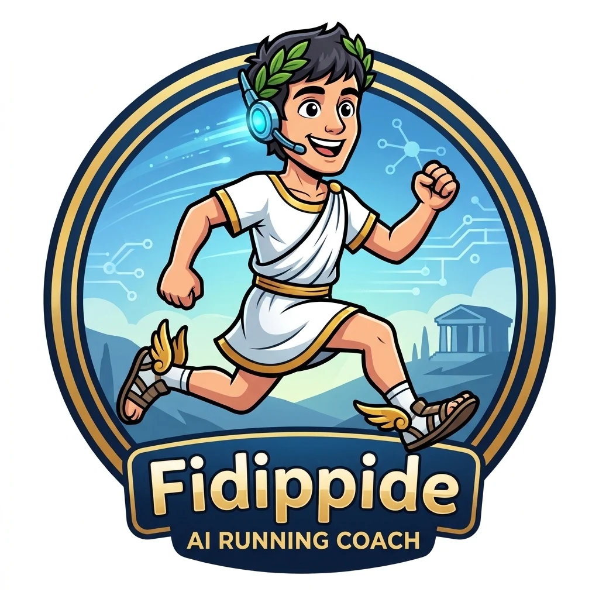

Fidippide
The AI running coach inside Claude Code.
Fidippide is a team of AI coaches that follows your running with one clear goal: better health. Races come after, as a bonus. It runs in Claude Code, reads your data from Garmin Connect and from your notes after every session, writes your training plans and sends them to your watch.
Health first, performance second. When health and performance clash, health always wins.
Live dashboards
The author's own training, updated after every sync: the plan dashboard (volume, sessions, paces, endurance, power, training load, injury risk) and the progress by session type (long runs, Tempo, intervals). Both pages are in Italian.
Why Fidippide
In 490 BC Pheidippides (Fidippide in Italian) ran from Marathon to Athens to announce the victory, and according to legend he died as soon as he arrived. It is the myth behind the marathon, and also a reminder: his coach does the opposite. It builds the base patiently, increases one thing at a time and stops before the body has to ask, because the goal is to keep running for years.
The coaches
| Coach | What it looks after |
|---|---|
| 🏃 Running coach | feedback after every session and a weekly review: plan versus reality, paces, heart rate, intervals, volume, decisions on the plan |
| ❤️ Health coach | recovery and well-being: resting heart rate, HRV, symptoms, when to ease off |
| 😴 Sleep coach | sleep length and quality, and how it affects training |
| 🥗 Nutrition coach | calorie and macronutrient plan, weight, food diary |
| 👂 ENT coach | tracking a chronic ear, nose and throat condition, and the criteria for running with it |
What it does
| Feature | In practice |
|---|---|
| Garmin sync | every run with laps, pace, heart rate, power, RPE and weather; resting heart rate, HRV and sleep every day |
| Metrics | heart rate zones kept up to date, aerobic decoupling, Endurance and Capacity Score, estimated VO2max, threshold, running economy, CTL/ATL/TSB, ACWR, a monthly runner profile |
| Plans | plans for 5K, 10K, half marathon and marathon, with gradual progression and recovery weeks; multi-year periodization |
| Workouts on the watch | the week's sessions sent to the Garmin calendar, with pace ranges and recoveries |
| Dashboard | volume, sessions, paces, endurance, power, training load and injury risk on one page |
| Theory | a book of notes written with myself as the test subject: the principle, what science says, what happened to me, what applies to everyone (in Italian) |
How to use it
In Claude Code, from the project folder, with your Garmin credentials in the .env file:
/garmin-sync # after every run /running-coach # the weekly review /training-dashboard # the big picture
The other coaches start when you talk to them: "how did I sleep?", "how am I recovering?".
Disclaimer
This is a personal project. The coaches are AI tools, not doctors: estimates and metrics have margins of error, and symptoms such as persistent pain, palpitations, dizziness or chest discomfort should always be checked by a professional.